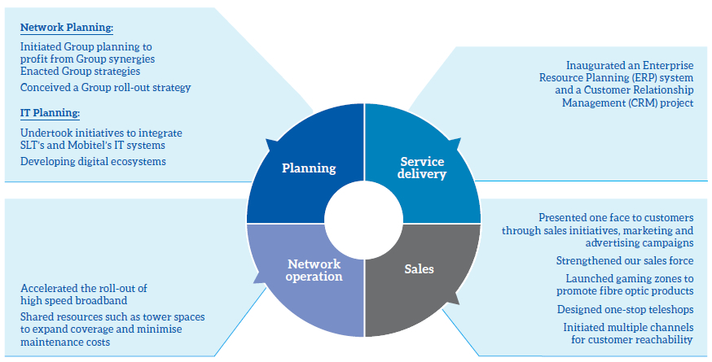
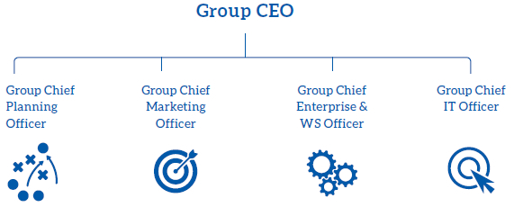
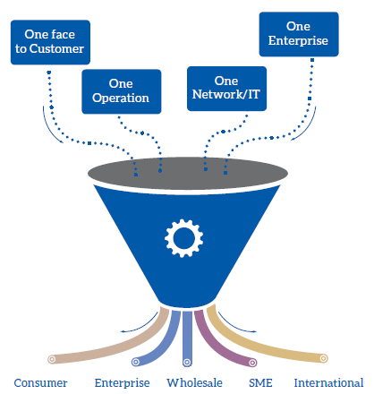
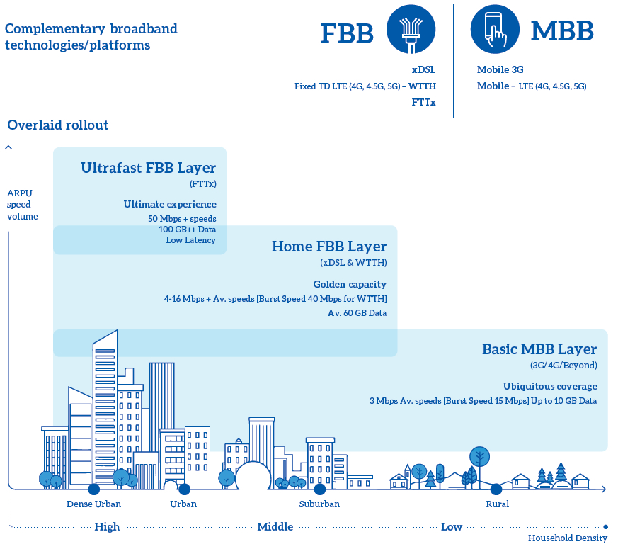
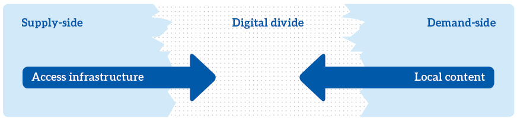

The following table lists some of the objectives and strategies of SLT in the past year. We will continue to refine and progress from these as we move on into the coming years:
| Objectives | Strategies |
| Improve internal efficiencies | Develop and streamlined the Centres of Excellence (CoE) for planning, sales, network development, regional operations and maintenance and logistics |
| Strengthening Group synergy | |
| Position SLT Group as a digital lifestyle provider and enhance the customer experience | Offer innovative ICT and smart lifestyle solutions to all; anytime and anywhere |
| Be ahead of the technological advances and improve network and technology capabilities to meet the future national demand for data, quality and speed | Accelerate the roll-out of high speed broadband networks with Fibre to the Home (FTTH) and 4G LTE technologies |
| Enhancing global connectivity | |
| Sustainable and inclusive growth | Fortifying SLT’s role as the national ICT service provider |
| Creating a digital-inclusive Sri Lanka | |
| Consolidating ICT for human development |
Improving Internal Efficiencies
Developing and streamlining the centres of excellence
In 2016, we undertook efforts to develop and integrate our Centres of Excellence throughout the Company’s reach of operations.
Consequently, we were able to record the following accomplishments.

Strengthening Group synergy
Establishing a Group structure
In the past, the CEO and the chief officers for planning, marketing, enterprise and wholesale, and IT only oversaw the operations of SLT. From September 2016, they were and will be responsible for the activities of the entire Group of our operations.

Setting up a Group operation model
Through our initiatives, we aspire to combine all our operations into one enterprise. In doing so, we can profit from one, consolidated network equipped with all relevant infrastructure ready to handle any and all customer requirements; encompassing the entire range from consumer to enterprises and SMEs.
In doing so, we will be presenting ‘one face’ to our customers. This will be backed by strong and effective promotional and advertising campaigns; that highlight the creation of one dynamic entity from all our operations. We have strong relationships with the media, and as a result, the public are highly aware of our Brand and potential.

The following table details some of the benefits that our Group synergies would deliver. By eliminating duplicate investments, we will be better positioned to make maximum use of the resources that are currently available at our disposal as well as make more prudent investments for the future.
Network/IT synergies
| Initiative | |
| Common OCS | Mobitel to procure an OCS that can support SLT requirements as well (SLT’s OCS Tender process terminated) |
| Common SMSC | SLT to use Mobitel’s SMSC (SLT’s initiative to procure a new SMSC terminated) |
| Common API Gateway | SLT to use Mobitel’s API GW (SLT’s initiative to procure API GW terminated) |
| Common IMS | Mobitel to use SLT’s IMS platform (Mobitel to exclude IMS from S-8 bids) |
| Common OSS | Common OSS for SLT and Mobitel |
Positioning the SLT Group as a Digital Lifestyle Provider
This will be the underlying focus of SLT’s operations in the years going forward. We plan to enrich our portfolio of existing products with new digital lifestyle solutions and collaborate with new content and ICT service providers.
We are cognisant of the threat of OTT players in the telecommunications industry. However, as a broadband service provider, we see this as an opportunity as well. The usage boosted by OTT consumption will fill up the broadband ‘pipes’ we create, thereby contributing towards a better return on investment. As supporting strategies, we are also looking at collaborating with OTT players on one hand, while creating our own OTT platform to deliver “carrier-grade” OTT services. We are also looking at the rich communications suite (RCS) technology, to deliver a carrier-grade alternative to OTT based services currently popular for voice, text, audio, picture and video messaging; leveraging on SLT’s IP Multimedia System (IMS) platform.
Mobitel will maintain its strong market position, by identifying market segments that it can capitalise on. It will continue to upgrade its Branches to ensure that they are capable of delivering exceptional performances. The SLT and Mobitel Brands will integrate into a holistic Group Branding approach and will see it leveraging multiple advantages from the ensuing synergies.
The development and promotion of info-communications services will be of key concern to Mobitel as well. These efforts will be supplemented with the continuing expansion of our business interests into diverse industries. We have already made leaps and bounds in introducing new technology to multiple sectors including banking, healthcare, transport and education; and look forward to the opportunities that lie ahead.
Being Ahead of Technological Advances and Improving Network Capabilities
We understand that our customers need more and more bandwidth to accommodate the increasing demands of their digital lifestyles. We are already equipped with the technology to provide higher data rates and handle the increase in corresponding data traffic. We will continue to develop our infrastructure and back this with the updates in latest technology. At the same time, we understand that there needs to be a shift in the public adoption of technology and Internet usage. This has to be spearheaded through both Government and private institutions, through the creation of an ecosystem of ICT that is relevant and meaningful to the day-to-day lives of the masses.
The following diagram details our roll-out strategy. We pay close attention to factors such as household density to optimise our operations in line with securing the maximum reciprocal returns.

Accelerating projects
We are accelerating the roll-out of high speed broadband networks through the dual initiatives of FTTH and 4G LTE technology. The acceleration is crucial here, as any delays in this process can lead to technological obsolescence. We are mindful of our investments, and try to gain as much as reciprocal benefits from them as possible, for the continued health of our operations.
Enhancing global connectivity
With the advent of the SEA-ME-WE 5 cable system and landing station, Sri Lanka is well-poised to position itself as a regional digital hub. We can thus add Sri Lanka to the world’s point of presence (PoP) network which counts Singapore, USA and the EU amongst its members. This will strengthen the country’s status as a key IT: BPO and data centre destination.
We will further oversee South Asia’s first cutting-edge submarine cable depot in the Galle Port in southern Sri Lanka. This cable maintenance station will oversee the repairing of all cables in the region, even those pertaining to external telecommunications operators.
Sustainable and Inclusive Growth
Fortifying SLT’s role as the national ICT
service provider
We remain committed to assuring SLT’s role as the national ICT services provider. Some of the new projects that we undertook to meet the ICT needs of the Government include initiating the Lanka Government Network 2.0, signing a memorandum of understanding (MoU) with the Megapolis and the Western Development programme and introducing a contact hotline whereupon the public can directly address their concerns to the President.
Creating a digital-inclusive Sri Lanka
The digital divide is a fundamental question that needs to be addressed in Sri Lanka. SLT has devised strategies to tackle this, paying key attention to the importance of affordability, availability, affinity and applicability.

Addressing challenges in demand
It is imperative that online content be created in languages that are used by local communities. This content should also be of interest to the individuals in question. We witness that this continues to be an issue in Sri Lanka. Most Government services are not available online. Thus, the Government and the private sector of Sri Lanka need to encourage the creation and disbursement of domestic content. Nonetheless, SLT has spearheaded contributions by local media and artists in developing novel, local content for the Internet. Some of these initiatives include kiyawamu.lk; (an online book portal developed in partnership with the National library), PEO TV (which houses local entertainment and educational channels) and mTicketing services. SLT equally hosts the Zero One Awards to recognise, honour and encourage digital initiatives in Sri Lanka.
Addressing challenges in supply
In summary, we have improved existing infrastructure to match the trends displayed by advances in global technology. We have introduced technologies such as LTE and FTTH to the market. These are capable of providing superior speeds and extending the reach of broadband services. The number of LTE base stations and Wi-Fi hotspots has increased in the rural areas of the country.
We have continually enhanced our mobile broadband experience by expanding the network capacity and introducing value added services (VAS). We have further been able to secure increased spectra through the economical deployment of infrastructure.
PEO TV system capacity increased to cater growing customer demand and contents also making available diverse choices.
During the period the global connectivity options and capacity expanded to cater to the forecasted data explosion in the future.
Affordability
We launched a range of products, services and promotions to increase the affordability of our offerings to customers. A full list of these can be accessed from our corporate website and associated press releases.
By improving the affordability of our products and services as such, we will be addressing the critical issue of bridging the digital divide that exists in Sri Lanka. It will further encourage market competition and drive the adoption of new technology in all spheres of the market. Finally, this will contribute to an increase in efficiency and effectiveness of all relevant economic and social activities.
Accessibility
We doubled package speeds to a maximum limit of 16 Mbps. Our Wi-Fi routers now provide multiple access points. LTE and FTTH technology give customers wireless broadband and high-speed internet solutions respectively. We have a wide-ranging network of Wi-Fi hotspots island-wide, have equipped all broadband products with online volume purchase and package transfer options.
We have equally introduced OTT content in the form of our Filmhall service. We have expanded mCash and eTicketing services to all other mobile operators and their customer bases.
Our SEA-ME-WE 5 submarine cable offers low latency advantages to all business segments and facilitates the disbursement of high-end online services like enterprise products and online gaming.
Consolidating ICT for human development
We believe that ICT can be harnessed as a crucial factor in human development. This forms the cornerstone of the field titled ICT for Development (ICT4D). Broadband technology can be instrumental in furthering human rights, embracing social inclusiveness and eradicating poverty. Similarly, the technology can champion economic growth by expanding productivity and competition and helping in the disbursement of knowledge.
Education is a domain that can greatly benefit from these improvements. Hand-held devices can enhance individualised learning, numeracy and literacy skills and engage users through features such as educational games. They can offer learners the flexibility of learning at their own pace, and devising curricula based on their interests. The portability of mobile phones and tablet computers can ensure that learning can happen in a range of places that extend beyond a traditional classroom. SLT is ready to take on the shared challenge of building an ICT-literate Sri Lanka. We support the Government’s aim in increasing ICT literacy to 60% by 2020, and are ready to equip all individuals to thrive in the digital revolution that is taking place.
Mobile and broadband technology can similarly revolutionise healthcare. Developments in hardware can allow for the measuring of vital signs and bodily actions, and software can ease the storing, transfer and analysing of these data. Geo-location devices can aid in the real-time monitoring and prevention of disease. SLT and Mobitel have already made progress in this arena. More information can be found in the ‘Customer Capital’ section of the Management Discussion and Analysis of this Report.
ICT can similarly be employed in furthering financial inclusiveness. According to reports by the World Bank, two billion people world-wide do not avail of banking services; the majority of whom are living in developing countries. Nonetheless, 70% of the world has access to a mobile phone, and this represents an ideal way of bridging this financial divide. Mobile financial services can further embolden disadvantaged groups such as rural women by providing a secure platform that is both confidential and convenient. Mobitel and SLT has made significant progress in this sector; and details can be accessed from the ‘Customer Capital’ section of the Management Discussion and Analysis of this Report.
ICT and broadband can equally foster innovation in the financial industry. The World Economic Forum notices that broadband facilitates entrepreneurship and countries with higher broadband rates see greater innovation. This increase can even be exponential. SLT is proud of its progress in this arena; and data has shown that our direct contributions to Sri Lanka’s economy has caused GDP to increase by 0.7% (backed by a 10% increase in the mobile penetration rate), and 1.3% (backed by a 10% increase in the broadband penetration rate).